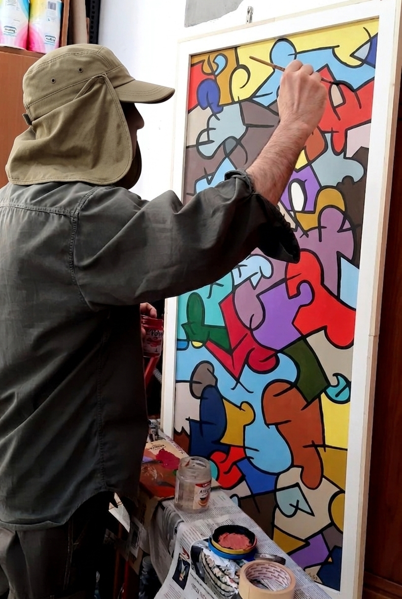

Pittore e scultore autodidatta, lavoro principalmente a Roma con un linguaggio che attinge a diverse culture visive, alle scritture simboliche e alla memoria storica collettiva.
Le mie tele nascono spesso da una sovrapposizione di segni: mappe, simboli, architetture viste dall'alto, scritture inventate. Prediligo i colori intrensi.
La scultura in pietra, terracotta e cemento è l'altro polo del mio lavoro: forme sintetiche, quasi arcaiche, lavorate a mano, a volte dipinte.
Espongo occasionalmente. Queste pagine raccolgono una selezione di opere degli ultimi anni.
